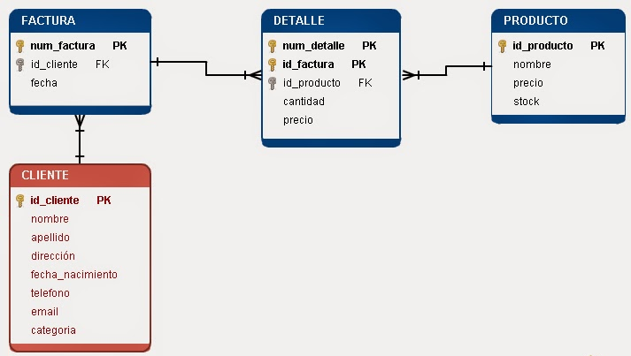

Normalizacion de base de Datos
Normalizacion de una base de Datos
El proceso de normalización de una base de datos consiste en aplicar una serie de reglas
a las relaciones obtenidas tras el paso del modelo E-R (entidad-relación) al modelo relacional.
Objetivo de la normalización
Las bases de datos relacionales se normalizan para:
° Evitar la redundancia de los datos.
° Evitar problemas de actualización de los datos en las tablas.
° Proteger la integridad de los datos.
En el modelo relacional es frecuente llamar tabla a una relación, aunque para que una tabla bidimensional sea considerada como una relación tiene cumplir con algunas restricciones:
° Cada columna debe tener su nombre único.
° No puede haber dos filas iguales. No se permiten los duplicados.
° Todos los datos en una columna deben ser del mismo tipo.
Claves
Claves Ajenas
Cuando se tienen dos tablas o más, una clave ajena es aquella columna de una tabla que hace referencia a una clave primaria de otra tabla.
También existe el caso de Relaciones Autoreferenciales. Sucede cuando en la misma relación se tiene una clave ajena que hace referencia a la clave primeria de la misma relación. Por otro lado las claves ajenas pueden tomar valores nulos.
Regla de Integridad Referencial
La base de datos no debe contener valores de clave ajena sin concordancia. Así como los valores de clave primaria representan identificadores de entidades,
las claves ajenas representan referencia a entidades.
La regla dice: Si B hace referencia a A entonces A debe existir. Surgen los siguientes dos puntos:
La integridad referencial exige concordancia en las claves ajenas, con las claves primerias, no con la claves alternativas.
Los conceptos de clave ajena e integridad referencial se definen uno en termino del otro.
Clave candidata
Por lo general la forma más eficiente y segura para escoger o hacer la clave primaria es poniendo un número y aumentando éste a medida que se van añadiendo filas, pero si de casualidad se diera el caso de que existan varias claves candidatas de las cuales se deba escoger la clave primaria, esta elección se hace utilizando el sentido común.
Claves alternativas
Son aquellas claves candidatas que no han sido elegidas.
Clave simple
Es una clave que esta compuesta solo de un atributo.
Clave compuesta
Es una clave que esta compuesta por más de un atributo.
Formas Normales
Las primeras tres formas normales son suficientes para cubrir las necesidades de la mayoría de las bases de datos. El creador de estas 3 primeras formas normales (o reglas)
fue Edgar F. Codd, éste introdujo la normalización en un artículo llamado A Relational Model of Data for Large Shared Data Banks.
Primera Forma Normal (1FN)
Sea α un conjunto de atributo perteneciente (Є) a la relación R, en donde R está en la Primera Forma Normal si todos los atibutos α[n] son atómicos, es decir no pueden seguir dividiéndose. Por ejemplo:
La Relación:
cursos: nombre, código, vacantes, horario, bibliografía
Queda después de aplicar la Forma Normal 1 de la siguiente manera:
cursos1: nombre, código, vacantes horario1: código, día, módulo bibliografia1: código, nombre, autor
Segunda Forma Normal (2FN)
Dependencia completa. Esta en 2FN si esta en 1FN y si sus atributos no principales dependen de forma completa de la clave principal.
Tercera Forma Normal (3FN)
Está en segunda forma normal y todo atributo no primo es implicado por la clave primaria en una secuencia no transitiva.Se eliminan las dependencias transitivas.
Forma normal de Boyce-Codd (FNBC)
Una tabla está en FNBC sí y sólo sí las únicas dependencias funcionales elementales son aquellas en las que la clave primaria determinan un atributo.
Cuarta Forma Normal (4FN)
Está en forma normal de Boyce-Codd y se eliminan las dependencias multivaluadas y se generan todas las relaciones externas con otras tablas u otras bases de datos.
Quinta Forma Normal (5FN)
Está en cuarta forma normal y toda dependencia-join viene implicada por claves candidatas.

Inicio